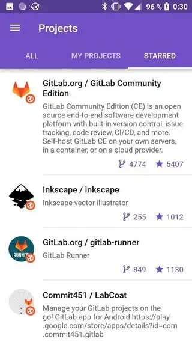

GitFox
برمجة
GitFox is your application to manage GitLab projects using an intuitive interface. In addition, it is a showcase of the "Clean Architecture" concepts and some useful libraries. GitFox brings you the next features: * OAuth and custom server authorization. * Activity stream from all projects. * Issue
✓ ترخيص مفتوح (Apache-2.0) · آخر تحديث: 2021-05-15
1.7.3الإصدار
3.7 MBالحجم
Apache-2.0الرخصة
Open in Kanzتحميل APK (3.7 MB)
Download APK
SHA-256: 11d586a3d02e992bf42ddc33f4281d51911e569af0d800a9d019402624212e8e

امسح الكود لفتح صفحة التطبيق
Scan to open this app page
لو كنز مش متثبت عندك: نزّل متجر كنز.
Not installed? Get the Kanz store.